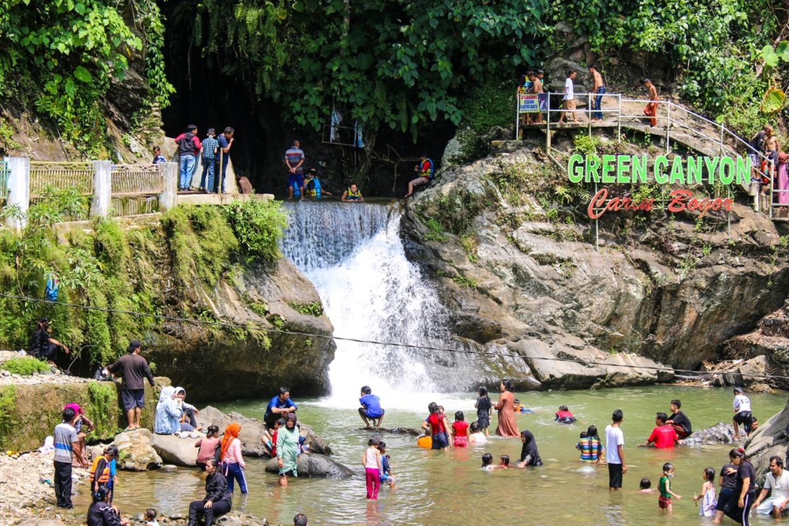
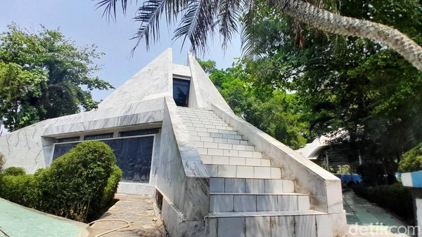

Sejarah

Sejarah Karawang kaya akan jejak peradaban yang panjang, mulai dari masa kerajaan-kerajaan kuno hingga era kemerdekaan Indonesia. Wilayah ini telah dihuni sejak lama, dibuktikan dengan peninggalan Situs Batujaya dan Situs
Cibuaya yang diperkirakan berasal dari masa sebelum Kerajaan Tarumanagara. Pada masa lalu, Karawang merupakan bagian dari Kerajaan Sunda dan memiliki peran penting sebagai jalur lalu lintas antara Kerajaan Padjadjaran dan
Kerajaan Galuh Pakuan. Agama Islam mulai masuk ke Karawang sekitar abad ke-15 Masehi, dibawa oleh ulama besar Syeikh Hasanudin bin Yusuf Idofi yang dikenal sebagai Syeikh Quro. Karawang juga tercatat dalam sejarah bangsa
Portugis sebagai pelabuhan penting Kerajaan Padjadjaran pada abad ke-16.
Perkembangan Karawang sebagai daerah pemerintahan sendiri dimulai pada abad ke-17 saat diduduki oleh Kesultanan Mataram. Pada tahun 1632, Wiraperbangsa dari Sumedang Larang diangkat sebagai wedana pertama dengan gelar Adipati
Kertabumi III. Setahun kemudian, tepatnya pada tanggal 14 September 1633, Raden Adipati Singaperbangsa dilantik sebagai bupati pertama dengan gelar Kertabumi IV. Tanggal inilah yang kemudian ditetapkan sebagai Hari Jadi
Kabupaten Karawang. Pada masa kemerdekaan, wilayah Karawang sempat terbagi dua, namun kemudian disatukan kembali. Karawang terus berkembang hingga kini dikenal sebagai salah satu daerah lumbung padi di Jawa Barat.
Geografis

Kabupaten Karawang terletak di bagian utara Provinsi Jawa Barat, secara geografis berada di antara 107°02' - 107°40' Bujur Timur dan 5°56' - 6°34' Lintang Selatan. Wilayahnya didominasi oleh dataran rendah yang relatif rata,
dengan variasi ketinggian antara 0 meter (di daerah pantai) hingga sekitar 50 meter di atas permukaan laut. Sebagian besar wilayah dataran rendah ini terletak di bagian utara, meliputi kecamatan-kecamatan seperti Pakisjaya,
Batujaya, Tirtajaya, Pedes, dan beberapa lainnya. Kondisi ini menjadikan Karawang memiliki potensi besar di bidang pertanian, khususnya persawahan.
Secara administratif, Karawang berbatasan dengan beberapa wilayah, yaitu Laut Jawa di sebelah utara yang membentang sepanjang sekitar 57 km, Kabupaten Bekasi di sebelah barat, Kabupaten Bogor di sebelah barat daya dan selatan,
Kabupaten Subang di sebelah timur, serta Kabupaten Purwakarta di sebelah tenggara dan selatan. Topografi yang didominasi dataran rendah ini merupakan hasil endapan batuan sedimen yang terbentuk dari material lepas, terutama
endapan laut dan aluvium vulkanik. Keberadaan garis pantai di utara juga memberikan Karawang akses ke sumber daya laut.
Wisata
Jangan hanya mengenal Karawang sebagai kota industri. Lebih dari itu, Karawang menyimpan pesona wisata yang sayang untuk dilewatkan. Siapkah Anda menjelajahi keindahan tersembunyi di Karawang?
Curug

Karawang memiliki beberapa curug (air terjun) yang menarik untuk dikunjungi, seperti Curug Cigentis dengan pemandangan indah di kaki Gunung Sanggabuana, Curug Bandung Loji dengan bebatuan besar, dan Curug Lisung yang
membutuhkan sedikit usaha untuk mencapainya. Curug-curug ini menawarkan alternatif wisata alam yang menyegarkan di Karawang.
Monumen Rawagede

Monumen Rawagede di Karawang didirikan untuk mengenang tragedi pembantaian ratusan warga sipil oleh tentara Belanda pada 9 Desember 1947, saat Agresi Militer Belanda I. Monumen berbentuk segitiga ini berisi informasi, foto,
diorama yang menggambarkan peristiwa tersebut, patung ibu berduka, dan makam para korban. Lokasinya di Desa Balongsari, Rawamerta, sekitar 7 km dari Kota Karawang, dan buka dari pagi hingga sore dengan tiket masuk yang
terjangkau. Kunjungan ke monumen ini merupakan bentuk penghormatan dan pembelajaran sejarah yang penting.